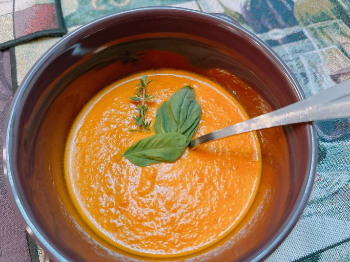

Roasted Cherry Tomato Soup

Roasted Cherry Tomato Soup in a bowl
This is a recipe for roasted tomato soup with cherries, onions, and many other vegetables and spices within it.
Ingredients
- 20 ounces cherry tomatoes
- 3 cloves garlic
- 1 carrot
- 1/2 onion
- 1 red bell pepper
- 2 tablespoons olive oil
- 1/2 teaspoon salt
- 1/4 cup water
- 1/2 cup cream
- basil leaves
- thyme sprigs
- crushed red pepper flakes
Steps
- Preheat the oven to 425 degrees F (220 degrees C). Line a sheet pan with foil.
- Spread vegetables out on the prepared pan. Drizzle with olive oil; toss to coat. Sprinkle salt and Italian seasoning evenly over vegetables.
- Roast vegetables in the preheated oven for 20 minutes.
- Fill a high powered blender (such as a Vitamix) halfway with roasted vegetables and any accumulated juices. Cover and hold lid down with a potholder; pulse a few times before leaving on to blend, about 45 seconds. Pour into a saucepan. Repeat with remaining roasted vegetables.
- Pour water into the soup; add cream. Stir to combine and cook until heated through, about 3 minutes. Taste and adjust seasonings.
- Ladle into soup bowls. Garnish with basil and thyme, and sprinkle with crushed red pepper flakes if desired. Serve immediately.